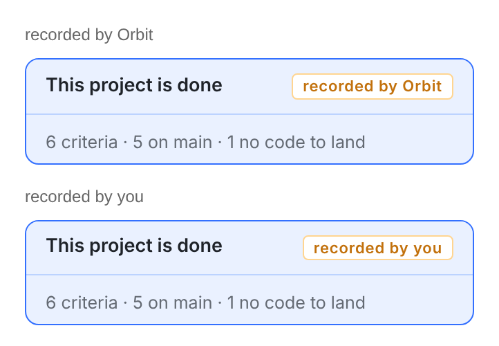

这是 Web 现成的收尾卡（ProjectWhyNotDoneCard 的 is-settled 分支）真实渲染出来的样子——Web 页面上画的就是它，一字不差；两枚徽标各对应「平台记的」和「你记的」。
和 iOS / Android 的绿卡不是一套皮肤：Web 这边是蓝底 + 琥珀色徽标（它今天在 Web 的协调会话里也长这样）。要不要把 Web 也统一成绿的，等你定。

（同一张卡的 iOS 样子见前两张图：绿底、绿对勾方块、等宽字徽标——那是它本来的画法。）